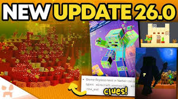
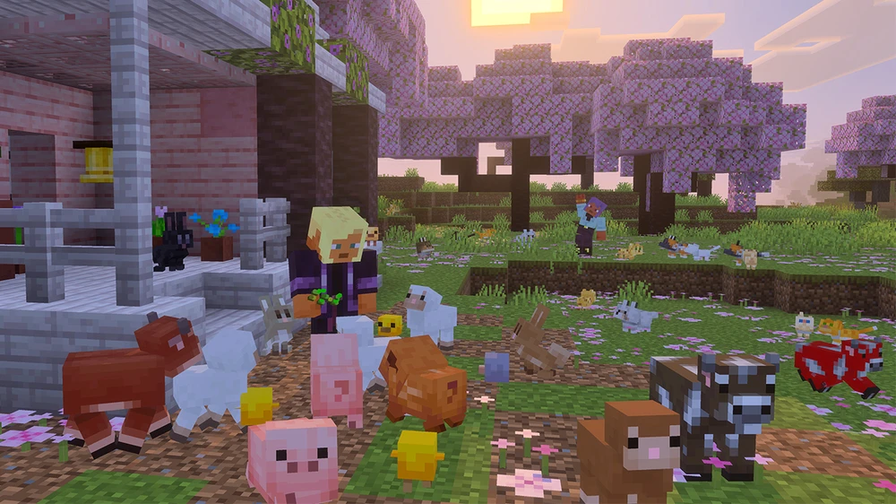
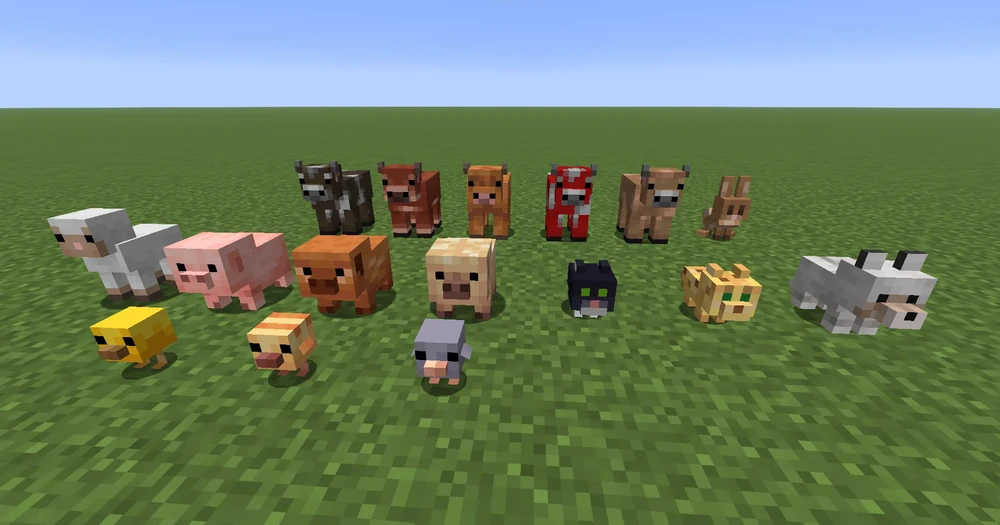

Tổng quan:
Minecraft PE 26 là cách gọi mới của các phiên bản Minecraft Bedrock phát hành trong năm 2026.
Thay vì sử dụng cách đặt tên cũ như 1.20, 1.21…, Mojang đã chuyển sang hệ thống đặt tên theo năm.
Vì vậy, Minecraft PE 26 thực chất tương đương với dòng phiên bản 1.26.x.
Thay đổi lớn nhất – Hệ thống phiên bản mới:
Điểm thay đổi quan trọng nhất của Minecraft PE 26 không nằm ở nội dung mà nằm ở cách đặt tên.
Số “26” đại diện cho năm 2026, giúp người chơi dễ nhận biết thời điểm phát hành.
Tuy nhiên, bên trong hệ thống game vẫn giữ cấu trúc phiên bản 1.26.x để đảm bảo tương thích.
Hệ thống Game Drop (cập nhật nhỏ liên tục):
Minecraft PE 26 áp dụng mô hình cập nhật mới gọi là “Game Drop”. Thay vì ra một bản cập nhật lớn mỗi năm,
Mojang chia nhỏ thành nhiều bản như 26.0, 26.1, 26.2… Mỗi bản sẽ bổ sung một số tính năng nhỏ,
sửa lỗi và tối ưu hiệu năng. Điều này giúp game được cải thiện liên tục và ổn định hơn.
Cải tiến gameplay:
Minecraft PE 26 mang lại nhiều cải tiến nhỏ nhưng quan trọng cho gameplay. Điều khiển cảm ứng được
tối ưu giúp thao tác dễ dàng hơn trên điện thoại. Giao diện người dùng (UI) được điều chỉnh để
trực quan hơn, đặc biệt trên màn hình nhỏ. Ngoài ra, một số hệ thống crafting và tương tác cũng
được cải tiến để thuận tiện hơn cho người chơi.
Đồ họa và hiệu ứng:
Phiên bản này cải thiện ánh sáng, màu sắc và hiệu ứng môi trường, giúp hình ảnh trong game trở nên
rõ ràng và đẹp mắt hơn. Một số thiết bị còn có thể tận dụng các cải tiến này để hiển thị hình ảnh
gần giống với phiên bản PC.
Tối ưu hiệu năng:
Minecraft PE 26 đặc biệt chú trọng vào hiệu năng. Game được tối ưu để giảm lag, tăng tốc độ tải thế giới
và hạn chế crash. Điều này giúp game chạy tốt hơn trên cả thiết bị cấu hình thấp và trung bình.
Cải tiến cho người chơi nâng cao:
Đối với những người chơi chuyên sâu như map maker hoặc sử dụng command, Minecraft PE 26 bổ sung và cải
tiến một số hệ thống lệnh và cơ chế kỹ thuật. Điều này giúp việc tạo map, mini game và hệ thống tự động
trở nên linh hoạt hơn.
Thay đổi định hướng phát triển:
Minecraft PE 26 đánh dấu sự chuyển đổi sang mô hình phát triển liên tục. Mojang không còn tập trung
vào các bản cập nhật lớn mà thay vào đó là cải tiến dần dần theo thời gian. Điều này giúp game luôn
mới mẻ và phản hồi nhanh hơn với ý kiến cộng đồng.